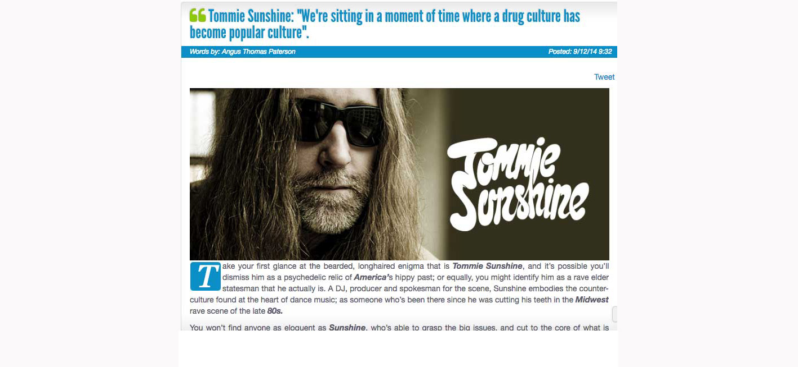
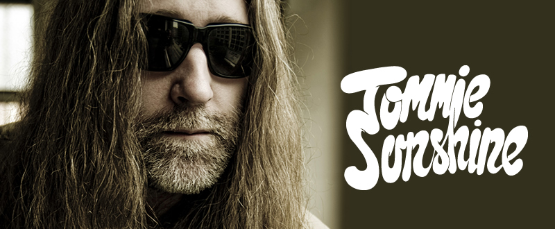

Tommie Sunshine: "We're Sitting in a Moment of Time Where a Drug Culture Has Become Popular Culture"
{kind=link}

{kind=link}

Take your first glance at the bearded, longhaired enigma that is Tommie Sunshine, and it’s possible you’ll dismiss him as a psychedelic relic of America’s hippy past; or equally, you might identify him as a rave elder statesman that he actually is. A DJ, producer and spokesman for the scene, Sunshine embodies the counter-culture found at the heart of dance music; as someone who’s been there since he was cutting his teeth in the Midwest rave scene of the late 80s.
You won’t find anyone as eloquent as Sunshine, who’s able to grasp the big issues, and cut to the core of what is being discussed. As such, he’s become one of the go-to guys for commentary on developments in the scene, writing regularly for publications like The Huffington Post, as well as a key moderator at conferences like Amsterdam Dance Event (ADE). While he’s a scene champion in general, he’s proved particularly adept at articulating the commercialization of dance culture associated with America’s embrace in the past few years; and his message largely a positive one.
“It’s been a crazy year,” he says incredulously. “I put out a record with Deorro, and obviously he’s exploded this year. I’ve signed a deal with Ultra Records, and I have four singles coming out with them in the next four months, so that’s all coming. I’ve got a couple of records that I’ve brought here that I’m going to sign. It’s just been a really relentless output of music.”
I Voice recently got to sit down with Sunshine for a proper face-to-face chat when he was visiting from the US. We discovered he’s busy as ever in the studio. With a new Chocolate Puma collaboration having arrived on Size Records recently, he’s working as always with the next generation of producers, as well as forging a few other sneaky projects wit the major label establishment.
Tell us about some of your recent projects?I did a remix of Elvis Presley for Sony, they’re gearing up for a worldwide release which is going to be quite a big deal I think. When I signed with Ultra Records, which is now a part of Sony, they kind of let me loose in the archives, and said, ‘make a list of the things that you want to mess with’. And one of the things on that list, in addition to The Clash, Psychedelic Furs and stuff like that, was Elvis. I saw they had a legacy side to they label, and were looking after his catalogue.
Working with an Elvis accapella is just mental. And we had the whole session, we had all of the stems, we were working with all these original things. And to listen to him sing, far out. You know what I mean? This is someone who was such an icon, and to be able to listen to just him, with no instrumentation…I didn’t particularly want to touch anything that was known, but I found this song called ‘I Got a Feeling In My Body’, which was Elvis coming out of his gospel phase. So he still had the gospel backup singers, but he’d recorded it like a funk record. Plus it’s called, ‘I Got a Feeling In My Body’, which is as much of a bullseye as you could ever ask for. I was trying originally to turn it into a proper bigroom dance record, but we just kept lowering the tempo and lowering the tempo, until it hit 118BPM. Now it’s like a real slow groover, with the funk of the original record. It almost sounds like a Talking Heads song, we really gave it this super groovy feel. Sony loves it, and they think it’ll be like a worldwide hit, which would obviously be fucking great.
I imagine that would have been an amazing thing to mess around with.No one’s really messed with Elvis. Junkie XL did his thing with ‘A Little Less Conversation’, but that was in 2001, and then three years later Paul Oakenfold did something called ‘Rubbernecking’, which was somewhat of a hit in England. But no one has touched any of the other stuff since, so it’s been a really long time since they’ve let anyone mess with that. I mean, working with an Elvis accapella is just mental. And we had the whole session, we had all of the stems, we were working with all these original things. And to listen to him sing, far out. You know what I mean? This is someone who was such an icon, and to be able to listen to just him, with no instrumentation… You realise how good a singer he was. You could hear at the time that he was straining a little. He was humongous, and he was on 27 different drugs when he tried to cut the vocal. But that was even more of a test of how good he was, because under duress, he still fucking killed it. Getting the chance to work with sessions with that, it’s magic.
I’m assuming that must be one of the great things with working with Sony. Some would question an alliance like that, but for an artist like yourself it opens up opportunities.There’s also potential for a lot of tension when working with a major. Artists are trying to be artists, and record labels are trying to sell records, and usually that never runs well...Well, major labels are a mess. There’s also potential for a lot of tension when working with a major. Artists are trying to be artists, and record labels are trying to sell records, and usually that never runs well. Because you’re just trying to do your thing, and they’re trying to do theirs…
But when you can figure out a project where you come together for something like this, it can potentially be explosive. And come on, there’s nowhere in the world where it’s not going to make sense. You go to any non-English speaking country in the world, and they still love Elvis.
Are you happy to see your music pushed by an organization like Ultra?Sure. They way I see it, I feel honored that at 43 years old to still even have a place in this business. This is a young game, so to be able to still be in it, and to be able to go on tours and play in all these crazy places. I’m just very gracious and thankful that it’s actually rolling. Having an alliance like that is key. And in America, it’s a shitshow right now. This music didn’t exist until four years ago. I mean of course, the US is where it was born; but the kids listening to it now don’t know that. They don’t know there was a Detroit, they don’t know there was a Chicago.
But that’s okay. I’m not gonna be the guy sitting there with my arms folded and talking about the “good old days”, because that’s all crap. That’s great for those guys, but I never look back. It’s all about the future. You can rest on your laurels, and you can coast, but that’s not artistic. Being artistic is about seeing the next thing, and working on the future, and that’s what it’s all about.
{kind=link}
Of course it’s all about money... but in the midst of all this craziness, all these festivals and everything else, all it’s doing is nurturing an absolutely insane uprising of the underground...What do you think are the zeitgeist issues at the moment?In America, everything has gone corporate now. Everything is on the stock exchange, trading for money. Who would have ever thought that this thing that we did in warehouses, which until recently was illegal, that we’d eventually see Afrojack ringing the bell on the Stock Exchange?
It’s ridiculous. It’s awesome, but it’s mental. But there’s a duopoly now, where’s there’s two entities running the show. That’s America dance music right now. On one side you have Live Nation, who own HARD and Insomniac, and then on the other it’s everything else. SFX Entertainment literally have control of everything else, from Tomorrowland to Beatport, and all these ticketing companies too. These two companies are in charge of so much of this, so that’s definitely a hotbutton issue. Problematic? How could it not be. There’s no diversity. It’s mental. That’s all backroom stuff though; the kids don’t give a shit about any of that. The kids are just about going out and getting fucked up and having fun.
That’s nuts! America has been fighting a war on drugs for decades, and now a drug culture is the coolest thing to do. In Colorado they made pot legal, and now it’s become the single most profitable taxable item in the world...This is the earliest stage of this in America. And who knows how the hell this even happened? We are sitting in a moment of time, where all of a sudden a drug culture has become popular culture. That’s nuts! America has been fighting a war on drugs for decades, and now a drug culture is the coolest thing to do. In Colorado they made pot legal, and now it’s become the single most profitable taxable item in the world. They made $100 million in three months just by taxing marijuana. What the hell is going on in America? This is a very strange time, and to have this music be the soundtrack to it? It’s fucking awesome!
The drug element is why it was kept out of the frame in the US for so long, presumably? But now that it’s actually making everyone a lot of money...Our vice president Joe Biden is the creator of the ‘Rave Act’, which squashed the rave scene going from the late 90s into the 2000s. He was the one who struck up the whole thing, because his niece went down to one of Donnie Estopinal’s parties in New Orleans, got too fucked up and ended up in the ER. She took one too many Es. And then he went on a blood hunt and shut down the whole rave scene in America, that was Joe Biden. Him and Hilary Clinton were the biggest supporters of the ‘Rave Act’. And now look what’s happened.
{kind=link}
In Brooklyn, you have these warehouse parties with around 2,000 people at it, and they’re playing hardstyle. And no one knows who the DJs are, they’re all just kids, and I love that...So what allowed it all this to change?Of course it’s all about money. People just saw dollar signs. Listen, there’s always going to be an element of this that makes money, but in the midst of all this craziness, in the midst of all these festivals and everything else, all it’s doing is nurturing an absolutely insane uprising of the underground. In Brooklyn, you have these warehouse parties with around 2,000 people at it, and they’re playing hardstyle. And no one knows who the DJs are, they’re all just kids, and I love that. I love the idea that I have no idea of what’s going on there, and that it’s like a completely different planet. That’s the way it should be. I’m already on the other side of that, but this whole next generation needs to create their own shit. And there will be a new genre of music in a year that we’ve never heard about, that no one is talking about.
There is one thing that I think is very important. People have talked about us being on a 20-year cycle, and I believe that is so very true. If you look back to ’94, that was the first time that the subgenres began to rise. Trance became trance, and turned into it’s own thing. Techno really broke off and became it’s own thing too. Drum n’ bass, or jungle as it was called then, really drifted off in its own direction. Then there was the whole Mo Wax, downtempo trip-hop thing, all of that was happening in ’94. And now might have ‘Melbourne Bounce’, or trap or whatever, these are different genres that have split off recently. But it’s happening again on the same timeline.
If you look at it from that kind of perspective, it took until around ’97 until Chemical Brothers released ‘Dig Your Own Hole’, and The Prodigy released ‘Fat of the Land’, it took until ’98 for ‘You’ve Come A Long Way’ from Fatboy Slim, and it took until ’99 for Moby to make ‘Play’. That means we’re like five years away from any of the current guys making their best work. And I believe that’s where we’re at, it’s gonna take another half a decade for these guys to really make their masterpieces. And that’s great, as it means the shelf life is just gonna keep trucking. And it’s going to. It’s so in its infancy. It’s still gaining traction.
Are people in the US still talking about the bust?I think people still are, but I think they’re foolish. There’s no bubble, there’s no ceiling. This is a ‘thing’. And it’s more of a thing than hip-hop. Hip-hop had drive, but hip-hop wasn’t making the sort of money this is making. Not even close. There were no hip-hop festivals in America, which hosted 400,000 kids over three days. No way! First of all, that would have been a bad idea wouldn’t have gone down very well in the early 90s [laughs]. It’s such a pandemic in America. And everyone is like, “oh it’s so commercial,”. Well, until you can walk down the streets of Toledo, Ohio and ask a housewife who Tiesto is, and she actually knows… that’s when you can say it’s commercial. We’re nowhere near that. It’s just gonna keep going.
I think it’s incredibly important that in order to be properly subversive, you still need to have everybody’s ear. If they don’t wanna pay attention, they’re not going to hear your message... The music you’ve always gravitated towards have been the more subversive styles. Fidget for instance was your big thing at the beginning of the decade.I can tell you right now, the record that I just made with Chocolate Puma, it’s a fidget record. It sounds like a Switch record from 2006. We’re making fidget, it’s just an updated version of it. This is something I always did, but I also realised something at one point; I realised that if I wanted to reach the most amount of people, I have to speak their language. And by being the weirdo who was playing this really off-center music, that wasn’t how I was going to reach the most people. So I said, what if I just try and tweak this just a little bit? What if I found those EDM records that will get me on festivals, and I can still play this kind of music?
I play the mainstage at Ultra, and I play crazy music on those stages, a guy like me shouldn’t be let anywhere near that shit. But I know how to do it in a way where I’m still speaking their language. And I think that’s the most subversive thing you can possibly do. Because now I’ve really bucked the mainstream, and now I can get into all these places and get all these gigs, and I’m playing to all these people and smashing their fucking heads in. And I play just enough of the stuff that they know, but the rest of it they have no idea. And of course I’m still pushing boundaries; it’s just different boundaries. But I think it’s incredibly important that in order to be properly subversive, you still need to have everybody’s ear. If they don’t wanna pay attention, they’re not going to hear your message. I just figured out a way to get them to pay attention.